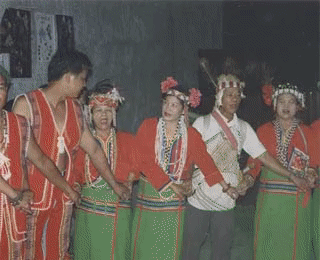
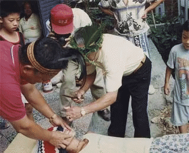
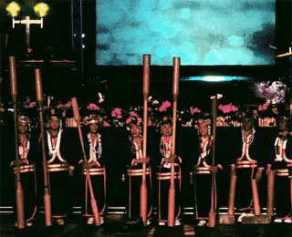

邵族居住於日月潭附近，曾經被視為是平埔族的一支、或是鄒族、布農族的一部分。

【圖片提供：謝世忠】
目前只有兩百多人的邵族，曾經經歷一段族群分類模糊的認同歷史。傳統以來居住在南投縣日月潭周邊德化社，他們曾經被視為是平埔族的一支、或是鄒族、布農族的一部分；然而根據邵族人的口述傳統，其祖先來自於中央山脈。今日邵族雖分據日月潭卜吉社與其鄰近之大平林兩地，然兩部落之邵族，均係出自同源，大平林之邵族，原來亦居住日月潭附近，而後方遷移至頭社，再遷徙至大平林。因此卜吉社和大平林之邵族應視為一單位。邵族人行父系氏族制度，婚姻法則為氏族外婚制。夾雜在平埔族（巴則海人）、鄒族與布農族、乃至漢人居住的領域之間，邵族人一度被認為文化已經消逝。然而參考過去有關原住民族樂舞的紀錄，邵族人的音樂舞蹈卻常常出現，特別是女性族人的杵音，自日據時期以來就成為學者、官員與觀光客的目光。
年祭是邵族最重要的祭典，自農曆七月底至八月下旬左右舉行。年祭時須先選出爐主，隨後才能舉行祭儀及歌舞歡慶。

【圖片提供：謝世忠】
邵族年祭自農曆七月底至八月下旬左右舉行。族人農曆七月底前會先釀酒以為儀式之用，年祭開始前夜以擊杵音通報年祭即將開始，八月初一族人必須選出爐主（palaikan），並由女性祭司「先生媽」（shin
shin）蒐集各戶的「公媽籃」（wulaluwan，內有前人衣物珠飾）
祭拜並為眾人舉行除穢儀式（titishan），她們隨後前往各家各戶祭拜並請邀祖靈準備降臨，當天晚上眾人聚集喝祭酒（to?to?）並由長老唱祭歌。八月初三舉行象徵性的打牙與拜牙儀式；初四蓋祖靈屋（han-nan）。初四到十一日間對族人而言是「恢復唱跳能力」的日子，族人在此階段練跳年祭歌舞。十二日一早族人從祖靈屋前歌舞出發，沿街低吟歌樂報告祖先部落近況，這樣的繞莊走唱稱為
khan-tien（牽田）或 minfazhfazh。年祭最後一日則由「先生媽」拜飯和「公媽籃」，祈福後由各戶將「公媽籃」領回，而後眾人飲宴歌舞作樂，全部的祭典則到二十六日拆卸祖靈屋之後落幕。
邵族最著名的樂舞是杵音。杵音源於婦女春米的韻律聲音，後來加上歌樂成為杵歌，再加上身體的律動而成杵舞。

【影片提供：廣電基金】
邵族的杵音源自於婦女舂米的韻律聲音，邵族人的杵音用七根杵，四長三短，因長短不同，而發出不同的音響；又由於個人所占位置不同，時快時慢，時重時輕，形成悅耳的音色。原本只有杵音（這點與布農族相同），後來邵族人加上歌樂成為杵歌，再加上身體的律動（一邊和著歌聲踏歌舉杵；一邊用腳掌撥弄湧出臼盤的粟米）而成為杵舞。
然而近年來根據語言學家李壬癸與民族音樂學家吳榮順的調查與整理，重現了邵族人年中歲時祭儀，包括播種祭（三月）、氏族祖靈祭、開墾山田與水田祭、狩獵祭（七月）、拜鰻祭以及豐年祭（八月）等。其中豐年祭祭歌共有十八首，合著舞蹈。豐年祭的最後一天，村中的人要以報佳音的形式挨家挨戶去唱歌，唱一首「大人牽手之歌」，每戶唱完後豐年祭才正式告一段落。
因語言古老、年代久遠加上文化變遷，邵族人所存留的祭歌中其中四成連祭司「先生媽」也不明其義。傳統舞蹈更是因為融合創新使得古風已失。只留下舊日的文獻任後人憑弔：「昔日邵族之歌舞，在生活中占極重要地位，日間從事於田野勞動，或追獵獸漁山中，夜竟月圓，飲酒歌舞徹夜，至五體疲憊、精神恍惚之境始休。凡祭祀，凱旋、收穫、婚宴、築屋落成、歡迎賓客、皆聚集飲粟酒歌唱群舞。以歌舞本身之動機與需要而言，男子遠較女子為切要，凡獵首、狩獵、祭神、戰爭、皆屬男子之義務，而此等團體性活動，少不了酒舞歌唱，故邵族昔日之歌舞亦應以男人為主體，此可由其他本省原住民族之立為借鏡。」（《臺灣省通志》卷八＜同胄志．邵族篇＞）
邵族杵音 (影片提供：廣電基金)
邵族最著名的樂舞是杵音。杵音源於婦女春米的韻律聲音，後來加上歌樂成為杵歌，再加上身體的律動而成杵舞。